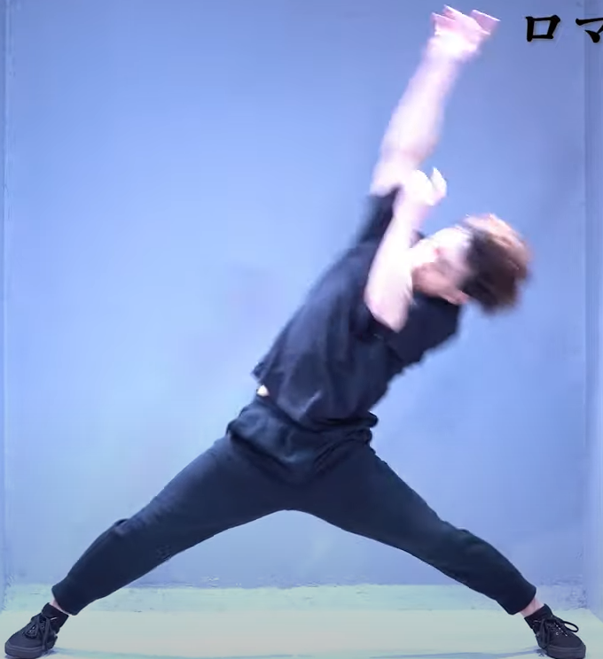

Wotagei History
Wotagei in its early form could be traced all the way back to mizuno aoi, and popularized and named wotagei by hello project otaku during fujimoto mikis’ romantic ukare mode.
Wotagei during this time was very basic, there was only 4 waza in use, PPH, OAD(over action dolphin), Mawari, and romance. These fundamental waza are still used within today’s scene.
Sometime in-between then, some seiyuu otaku created “thundersnake” named after the venue “thundersnake atsugi” where the band ikimonogakari performed at on June 10, 2007.
Later on within the timeline, maybe early 2010s, a guy named bakkuhon（ばっくほん） takes these early wotagei waza and adapts them to use cheerlights and later makes his own waza, amaterasu（アマテラス) and shaori(シャオリー).

Now here starts the problem, there became now two factions. People who still do these older form of wotagei, and people who are in this new wotagei movement…
Because of this, there was a way to distinguish them. the new wotagei would be named “ヲタ芸”(wotagei) while the older one would be named “オタ芸” (otagei)
Now these terms were used for a while until people realized i guess, it was still hard to distinguish between the two types, so the name “地下芸”(chikagei) was made.
People who do chikagei usually do it at idol lives or anikura(anime DJ club), while modern wotagei has split off into its own culture entirely with its own terminology and community.
Generally, if you see someone doing wotagei without cheerlights, its 地下芸(chikagei) or otagei(オタ芸), and if someone is using cheerlights, its ヲタ芸(wotagei)
Over Action Dolphin (OAD)